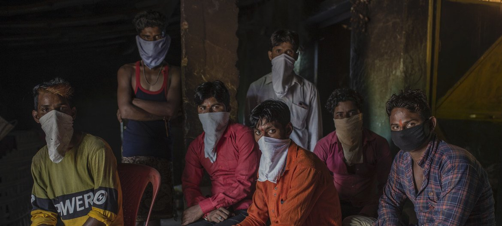

SOBRE O DIA INTERNACIONAL DAS REMESSAS FAMILIARES
O Dia Internacional das Remessas Familiares foi estabelecido pela Assembleia Geral das Nações Unidas em 16 de junho de 2018. A data foi criada para reconhecer a importância das remessas familiares, que são transferências de dinheiro feitas por trabalhadores migrantes para suas famílias em seus países de origem. A motivação por trás da criação do Dia Internacional das Remessas Familiares foi destacar o papel significativo que as remessas desempenham na melhoria das condições de vida das famílias que dependem desses recursos. As remessas representam uma importante fonte de renda para muitos países em desenvolvimento, contribuindo para a redução da pobreza, o acesso à educação, a melhoria da saúde e o desenvolvimento econômico. Ao estabelecer o Dia Internacional das Remessas Familiares, a ONU busca promover a conscientização sobre o impacto positivo das remessas e incentivar a redução dos custos das transferências de dinheiro, além de destacar a importância de políticas e programas que apoiem os migrantes e suas famílias. É importante ressaltar que embora o dia tenha sido estabelecido em 2018, as remessas familiares existem há muito tempo, com milhões de pessoas ao redor do mundo contando com esse apoio financeiro para sustentar suas famílias. O Dia Internacional das Remessas Familiares serve como um lembrete anual para celebrar e reconhecer a contribuição vital desses fluxos financeiros para as comunidades globais.